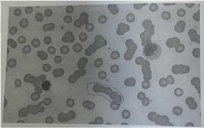
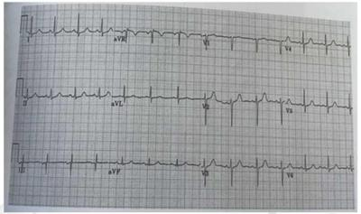
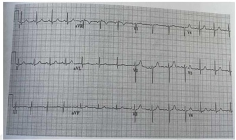

Questão 1 · Exames Complementares Básicos · Cardiologia · 4000168792GDG, 52 anos, sexo feminino, advogada, que vai ser submetida a colecistectomia videolaparoscópica eletiva, no tratamento de colecistolitíase assintomática, informa uso regular de losartana e hidroclorotiazida indicados no tratamento de hipertensão arterial. Em relação à avaliação pré-operatória desta paciente, assinale a alternativa ERRADA:
A Deve ser realizada radiografia de tórax.
B Deve-se dosar os níveis séricos de ALT e AST.
C Há indicação de fazer a dosagem de creatinina sérica.
D Há indicação de se dosar os eletrólitos.
Questão 2 · Trauma Vascular de Extremidades · Cirurgia · 4000168791Adulto jovem, sexo masculino, foi vítima de acidente de moto com laceração importante de MID, que apresenta sangramento ativo intenso (vultuoso). Quanto aos cuidados a serem dispensados em pacientes com hemorragia traumática aguda, assinale a alternativa ERRADA:
A A fonte de sangramento geralmente é identificada por exame físico e por imagens.
B A reanimação volêmica agressiva e contínua não substitui o controle definitivo do sangramento.
C O clampeamento as cegas na sala de emergência pode causar danos aos nervos e às veias
D O torniquete deve ser a primeira medida diante de uma hemorragia externa significativa de membro.
Questão 3 · Queimaduras e Trauma Elétrico · Cirurgia · 4000168790Criança de 25 kg, 7 anos, sexo feminino, foi vítima de queimaduras de 2° e 3° graus, acometendo tórax, abdome e membros superiores e correspondendo a 35% da superfície corporal. Quanto aos cuidados indicados a esta paciente, assinale a alternativa ERRADA:
A A punção venosa do membro superior, mesmo que em superfície queimada, é preferível à punção da veia safena.
B A taquicardia é um bom parâmetro para se avaliar a resposta fisiológica à reposição volêmica.
C Ela deve receber fluidos de manutenção de glicose, além do fluido de reanimação de queimados.
D O débito urinário deve ser mantido em pelo menos 1 ml/kg/hora.
Questão 4 · Trombose Venosa Prof unda TVP · Cirurgia · 4000168789CFG, sexo feminino, 61 anos, sem comorbidades, apresentou hematoquezia volumosa. Foi constatada a presença de um adenocarcinoma de sigmóide, com sangramento ativo, à colonoscopia, sendo programada a ressecção cirúrgica. Considerando-se o risco de fenômenos tromboembólicos no pós-operatório deste caso, assinale a alternativa ERRADA:
A Heparina de baixo peso molecular pode ser introduzida desde o pré-operatório para a prevenção do tromboembolismo.
B Heparina não-fracionada tem baixo custo e pode ser usada na profilaxia do tromboembolismo.
C O uso de meia elástica de compressão graduada reduz o risco de formação de trombos.
D Os fenômenos embólicos são provocados principalmente por trombos de veias da panturrilha
Questão 5 · Diagnóstico estadiamento e f atores prognósticos · Dermatologia · Tratamento e conduta · 4000168788KS, sexo masculino, 45 anos, retorna ao serviço de cirurgia ambulatorial com o resultado do exame histopatológico de cirurgia realizada anteriormente. Segundo a descrição cirúrgica foi ressecado nevo pigmentado, irregular, assimétrico e multicolorido em face, com margem de 1cm. O exame anatomopatológico confirma melanoma com células neoplásicas, con nadas à epiderme e ao epitélio anexial com margens cirúrgicas livres. De acordo com as características da lesão e o exame histopatológico, assinale a alternativa que apresenta uma conduta ERRADA:
A Deve-se ampliar as margens de segurança.
B Independentemente do tratamento realizado, o paciente deve ser acompanhado regularmente.
C Não há indicação para pesquisa de linfonodo sentinela.
D Não há necessidade de nova intervenção cirúrgica, pelas características histopatológicas.
Questão 6 · Manejo das Principais Cardiopatias no Préoperatório · 4000168787Monitorização de Complicações Cardiovasculares Perioperatórias SDG, 82 anos, sexo feminino, foi submetida a colectomia esquerda laparoscópica para tratamento do câncer de cólon sigmoide. No pós-operatório imediato apresentou complicação cardiovascular. Em relação às alterações cardiovasculares em pacientes nessa faixa etária, assinale a alternativa ERRADA:
A Esclerose e calcificações da valva aórtica são comuns, mas habitualmente não têm significado funcional.
B Mesmo uma discreta hipoxemia pode resultar em relaxamento miocárdico prolongado.
C O coração "envelhecido" mantém o débito cardíaco às custas do aumento da frequência cardíaca.
D Um aumento da volemia relativamente pequeno pode comprometer significativamente a função cardíaca.
Questão 7 · Cirurgia · Coledocolitíase · 4000168786MCDL, 78 anos, sexo feminino, iniciou há três dias com icterícia, febre, calafrios, urina escura, náuseas, vômitos e dor lombar. Comorbidades: hipertensão arterial, diabetes melito tipo 2 e osteoartrose de coluna lombar. Fez ultrassonogra a de abdome total na urgência que evidenciou: inúmeros cálculos na vesícula biliar, leve dilatação do colédoco e distensão das alças intestinais no abdome superior que não permitiram avaliação do pâncreas e colédoco distal. Em relação à condução do caso a partir desse momento, assinale a alternativa mais INADEQUADA:
A Indicar internação hospitalar para garantir suporte clínico e acelerar propedêutica (estudo laboratorial e com métodos de imagem).
B Pedir avaliação laboratorial completa incluindo glicemia, ionograma, função hepática e renal, amilase, lipase, hemograma e exame de urina rotina.
C Por se tratar de paciente diabética, iniciar imediatamente com antibioticoterapia endovenosa de largo espectro e reavaliar após a melhora do quadro infeccioso.
D Solicitar tomografia de abdome total para melhor avaliação das vias biliares e do pâncreas.
Questão 8 · Inf ectologia · Antibioticoprof ilaxia Cirúrgica · 4000168785Em relação ao uso de antibiótico profilático em cirurgia, assinale a alternativa CORRETA:
A A vancomicina tem indicação principalmente na profilaxia de MRSA(Staphylococcus aureus meticilino resistentes) em pacientes alérgicos aos betalactâmicos.
B Os aminoglicosídeos têm a vantagem de obtenção de níveis teciduais efetivos mais precoses.
C Os carbapenêmicos são os antimicrobianos de primeira escolha na profilaxia.
D Recomenda-se a utilização rotineira de cefalosporinas de 3ª geração.
Questão 9 · Suporte Nutricional Parenteral · Cirurgia · 4000168784A terapia nutricional parenteral(TNP), seja periférica ou central, tem como principal objetivo garantir a nutrição de pacientes que, por determinado período não estejam podendo ser devidamente alimentados por outras vias. Sobre as características e as recomendações que envolvem a implementação da TNP em pacientes adultos hospitalizados, é CORRETO a rmar que:
A A hiperglicemia pode ser uma complicação relacionada ao uso de TNP, sendo mais provável em pacientes diabéticos e incomum, em pacientes em condições de sepse ou trauma.
B A nutrição parenteral é uma solução isotônica de nutrientes que pode reduzir o risco nutricional pré-operatório, interferindo positivamente na recuperação e modulação da resposta imunológica.
C As soluções de glicose na nutrição parenteral geralmente estão presentes sob a forma monohidratada e a quantidade máxima requerida não deve ultrapassar 5mg/kg/min, taxas limítrofes para sua oxidação orgânica plena.
D Pacientes obesos tem menor risco de síndrome de realimentação, que frequentemente está associada à redução dos níveis séricos de fósforo, potássio e magnésio.
Questão 10 · Princípios da Anestesiologia · Cirurgia · 4000168783Alguns adjuvantes são utilizados em associação aos anestésicos locais para melhorar a qualidade da anestesia durante o procedimento cirúrgico. Em relação a essa associação é CORRETO afirmar:
A A adrenalina aumenta o pH do local da cirurgia reduzindo a latência anestésica.
B Em uma solução de anestésico local contendo adrenalina diluída em 1:400.000 temos 5,0mcg de adrenalina para cada 1,0ml da solução.
C Frascos de anestésicos local contendo adrenalina apresentam em geral pH mais ácido podendo ocasionar aumento na latência anestésica.
D O bicarbonato de sódio reduz o pKa do anestésico reduzindo a latência anestésica.
Questão 11 · Risco Cirúrgico · Manif estações clínicas · Cirrose · 4000168782FBG, 55 anos, sexo masculino, com cirrose hepática de origem etanólica, no momento sem queixas, está em pré- operatório de colecistectomia videolaparoscópica, indicado no tratamento de colecistolitíase sintomática. Ao exame físico encontrava-se orientado no tempo e espaço, FC: 80bpm, PA: 130x60mmHg, ascite grau I e sem edema em membros inferiores. Os exames laboratoriais evidenciavam: Hb: 10,3%, Leucócitos globais: 5.000/ mm³, plaquetas: 122.000/mm³, Ur: 50mg%, Cr: 1,2mg%, NA: 132mEq/L, K: 3,0mEq/L, albumina 3,6%, bilirrubina 1,5mg%, tempo de protrombina 14 segundos (controle 12 segundos) e RNI 1,4. Em relação ao caso é CORRETO afirmar?
A A cirurgia deve ser contraindicada neste momento, em decorrência do grau de cirrose hepática.
B É indispensável calcular o MELD (modelo para doença hepática crônica terminal) nestes casos para avaliar a indicação cirúrgica.
C O paciente é classifica como ChildPugh B, devendo ser encaminhado ao hepatologista para avaliação clínica completa.
D O risco cirúrgico desse paciente não é elevado considerando o seu estado geral e o porte da operação proposta.
Questão 12 · Distúrbios do equilíbrio acidobásico DHE · Nef rologia · 4000168781Paciente de 53 anos, sexo masculino, sem comorbidades, foi submetido a colectomia esquerda laparotômica e ressecção sincrônica de metástase hepática em lobo esquerdo. O procedimento cirúrgico durou aproximadamente seis horas e foi necessária administração de grande quantidade de cristaloides (soro siológico de Ringer lactato) e 900 mL de concentrado de hemácias. Foi extubado apresentando bom padrão respiratório, sem dor e com estabilidade hemodinâmica, não sendo necessário o uso de aminas vasoativas. Enquanto aguardava transferência para o centro de tratamento intensivo, o paciente permaneceu na sala de cirurgia onde o anestesiologista colheu gasometria arterial. Considerando as informações apresentadas acima, assinale a alternativa que apresenta a gasometria arterial MAIS PROVÁVEL de ser encontrada pelo anestesiologista:
A pH = 7,15; HCO3 = 14 mEq/L; PaCO2 = 37 mmHg; BE = -11 mEq/L.
B pH = 7,25; HCO3 = 17 mEq/L; PaCO2 = 45 mmHg; BE = -8 mEq/L.
C pH = 7,32; HCO3 = 18 mEq/L; PaCO2 = 35 mmHg; BE = -7 mEq/L.
D pH = 7,52; HCO3 = 20 mEq/L; PaCO2 = 28 mmHg; BE = -5 mEq/L.
Questão 13 · Doenças Orovalvares · Indicações de Revascularização Miocárdica Préoperatória · Cardiologia · 4000168780A correta avaliação pré-operatória acompanhada do adequado preparo pré-operatório podem reduzir as taxas de complicações cardiovasculares, respiratórias e renais. Em relação ao tema é CORRETO afirmar:
A A revascularização miocárdica está indicada de rotina antes da cirurgia não-cardíaca nos pacientes com isquemia coronariana.
B A impossibilidade de subir quatro lances de escada corresponde a equivalente metabólico menor que quatro, o que dobra, por si só, o risco de complicações cardiovasculares.
C No índice de risco cardíaco revisado, a presença de isquemia coronariana recente e de insuficiência cardíaca descompensada são os fatores de maior pontuação para a ocorrência de complicações cardiovasculares.
D Pacientes que apresentam valvopatia com indicação de tratamento intervencionista valvar devem ser, prioritariamente, submetidos ao tratamento cardíaco antes da cirurgia não-cardíaca proposta.
Questão 14 · Medidas para Redução do Risco Cirúrgico · Manejo da Anticoagulação no Perioperatório · Cardiologia · 4000168779Muitos pacientes candidatos a cirurgia fazem uso de medicamentos para tratamento de doenças que podem trazer consequências adversas no período perioperatório. Por outro lado, alguns pacientes podem iniciar o uso de medicamentos com o objetivo de prevenir complicações perioperatórias. Em relação ao tema, é CORRETO afirmar:
A A prescrição de aspirina no pré-operatório é recomendada em todos pacientes com risco de isquemia coronariana pois não aumenta o risco de sangramento perioperatório.
B A utilização de ponte pré-operatória com heparina não está indicada em todos os pacientes com fibrilação atrial que fazem uso de anticoagulante oral.
C Existe o consenso de que os inibidores da enzima conversora da angiotensina devam ser administrados inclusive no dia da cirurgia.
D Em pacientes com alto risco de isquemia coronariana, recomenda-se a introdução de betabloqueadores quatro horas antes do procedimento cirúrgico.
Questão 15 · Resposta EndócrinoMetabólicaInf lamatória ao Trauma REMIT · Cirurgia · 4000168778Várias alterações endócrino-metabólicas ocorrem imediatamente após o trauma cirúrgico. Em paciente submetido a cirurgia de grande porte, prolongada e com grande perda sanguínea, assinale a alternativa que apresenta CORRETAMENTE a alteração metabólica esperada:
A Excreção urinária definitrogênio em torno de 5 gramas ao dia.
B Hiperglicemia decorrente principalmente, da liberação de aminoácidos cetogênicos.
C Liberação aumentada de ácidos graxos livres que serão utilizados na gliconeogênese.
D Redução da produção de proteínas de fase aguda como a albumina.
Questão 16 · Demências · Demências Reversíveis · Demências Rapidamente Progressivas · 4000168777Homem de 80 anos é levado ao consultório por familiares que relatam mudança de comportamento há seis meses, com desinibição social e perda de memória. Não há comorbidades conhecidas ou uso de medicamentos, negam tabagismo e etilismo. O exame físico não apresenta anormalidades. Trazem os seguintes exames: Exames de laboratório: anti-HIV não reator; VDRL não reator; sorologia positiva para T. pallidum; TSH 6,7UI/mL, vitamina B12 256pg/mL. Tomogra a Computadorizada do crânio: sem anormalidades. Considerando esses dados clínicos, assinale a alternativa que apresenta a conduta sequencial MAIS ADEQUADA:
A Prescrever levotiroxina e cianocobalamina
B Prescrever penicilina endovenosa
C Realizar punção lombar
D Solicitar ressonância magnética do encéfalo
Questão 17 · Rastreamento · 4000168776Mulher de 58 anos vai ao Centro de Saúde para consulta de acompanhamento médico. Queixa-se de acordar frequentemente durante a madrugada com taquicardia e sudorese. Possui diabetes melito tipo 2 e hipertensão arterial sistêmica. Faz uso domiciliar regular, há dois anos, de metformina 850mg duas vezes ao dia, gliclazida 60mg pela manhã, enalapril 20mg duas vezes ao dia. Relata menopausa há três anos, é viúva há seis anos e não possui parceiro sexual desde então. Ao exame, PA 156/84mmHg, FC 98bpm, FR 19ipm; sem outras anormalidades. Diz que a PA aferida pela lha enfermeira, em casa, geralmente está em torno de 120/80mmHg. Exames de laboratório atuais: hemoglobina glicada A1c 6,3%; creatinina 0,7mg/dL, potássio 4,3mg/dL. Na avaliação preventiva de saúde dessa paciente, qual dos exames abaixo NÃO ESTÁ INDICADO neste momento?
A Colonoscopia
B Densitometria óssea
C Dosagem de triglicérides e de colesterol
D Exame citopatológico do colo uterino
Questão 18 · Metas de controle pressórico · Medicações com ef eito sensibilizador de insulina · 4000168775Medicações que aumentam a secreção de insulina Mulher de 58 anos vai ao Centro de Saúde para consulta de acompanhamento médico. Queixa-se de acordar frequentemente durante a madrugada com taquicardia e sudorese. Possui diabetes melito tipo 2 e hipertensão arterial sistêmica. Faz uso domiciliar regular, há dois anos, de metformina 850mg duas vezes ao dia, gliclazida 60mg pela manhã, enalapril 20mg duas vezes ao dia. Relata menopausa há três anos, é viúva há seis anos e não possui parceiro sexual desde então. Ao exame, PA 156/84mmHg, FC 98bpm, FR 19ipm; sem outras anormalidades. Diz que a PA aferida pela lha enfermeira, em casa, geralmente está em torno de 120/80mmHg. Exames de laboratório atuais: hemoglobina glicada A1c 6,3%; creatinina 0,7mg/dL, potássio 4,3mg/dL. Assinale a alternativa que apresenta uma conduta INADEQUADA após essa consulta
A Acrescentar anlodipino à prescrição
B Reduzir a dosagem de gliclazida
C Solicitar dosagem de vitamina B12
D Solicitar aferições de glicemia capilar durante a madrugada
Questão 19 · Síndrome Dispéptica · 4000168774Homem de 72 anos se queixa de dor epigástrica intensa cerca de 40 minutos após as refeições, com uma hora de duração, há cerca de 2 meses. Nega alteração do hábito intestinal, distensão abdominal, náuseas, vômitos, pirose ou regurgitação. A dor nunca ocorre durante a noite ou o desperta do sono. Perdeu 7kg nesse período e tem evitado se alimentar. É tabagista desde os 20 anos e fuma um maço de cigarros ao dia. É etilista, ingerindo duas latas de cerveja ao dia, há sete anos. É portador de hipertensão arterial sistêmica e faz uso de losartana há 5 anos. O exame físico não apresenta anormalidades. A endoscopia digestiva alta e a tomogra a computadorizada do abdome não revelaram anormalidades. Assinale a alternativa que apresenta o diagnóstico MAIS PROVÁVEL para esse paciente:
A Angina mesentérica
B Dispepsia funcional
C Pancreatite crônica
D Síndrome de super-crescimento bacteriano
Questão 20 · Câncer de Pulmão · Pneumologia · 4000168773Homem de 68 anos queixa-se de dispneia e tosse há 10 dias. É tabagista desde os 20 anos e fuma um maço de cigarros ao dia. É operário em uma mineradora há 25 anos. Ao exame físico, a avaliação do tórax revela expansibilidade reduzida no hemitórax direito, observando-se no 1/3 superior ipsilateral: submacicez à percussão, frêmito toracovocal abolido e ausência de sons respiratórios na mesma região. Assinale a alternativa que apresenta a causa MAIS PROVÁVEL para os achados no exame físico e na radiografia do tórax desse paciente:

A Atelectasia do lobo médio
B Câncer de pulmão
C Pneumonia lobar
D Silicose pulmonar
Questão 21 · Fisiopatologia do mieloma múltiplo MM · Hematologia · Quadro Clínico do mieloma múltiplo MM · 4000168772Mulher de 76 anos apresenta emagrecimento, dor lombar, astenia e dispneia aos esforços. Desconhece comorbidades prévias, nega tabagismo etilismo ou uso de medicamentos. Ao exame, as mucosas estão descoradas; sem outras anormalidades. Exames de laboratório: Hb 7,3g/dL; LG 6.500/mm³; Plq 112.000/mm³; VHS 95mm na primeira hora; creatinina 2,2mg/dL; Ureia 47mg/dL; cálcio total 10,6g/dL; albumina serica 2,0g/dL; LDH 450Ul/L; BT 0,9mg/dL. A hematoscopia revelou o seguinte achado: Considerando o diagnóstico mais provável para essa paciente, assinale a alternativa que apresenta o(s) exame(s) MAIS ADEQUADO(S) a ser(em) solicitado(s) nesse momento:

A Eletroforese de proteínas séricas e urinárias.
B Endoscopias do trato digestivo alto e baixo.
C Pesquisa do cromossomo Philadelphia.
D Teste de fragilidade osmótica de eritrócitos.
Questão 22 · Tratamento Medicamentoso das Epilepsias · Epilepsias · Classif icação das Crises Epilépticas · 4000168771Mulher de 23 anos, atendente de supermercado, é levada ao Pronto Socorro com relato de ter apresentado, durante o trabalho, uma crise convulsiva interpretada como do tipo tônico-clônico generalizada de dois minutos de duração. Nega quaisquer eventos neurológicos prévios. Não possui comorbidades conhecidas, nega trauma anterior, não faz uso de medicamentos e nem de drogas lícitas ou ilícitas. O exame clínico e neurológico, assim como os exames de laboratório e a tomogra a computadorizada do crânio, não apresentam anormalidades. Assinale a alternativa que apresenta a conduta MAIS ADEQUADA nesse caso.
A Dar alta com a solicitação de eletroencefalograma, ressonância magnética de crânio e encaminhamento ao neurologista
B Prescrever dose de ataque de fenitoína e dar alta com anticonvulsivante oral, que deve ser usado, pelo menos, por 1 ano
C Prescrever dose de ataque de fenitoína pela via IV e manter em observação hospitalar por 24h
D Transferir para hospital com neurologista para realizar a extensão propedêutica com a paciente internada
Questão 23 · Tratamento · Hipercalcemia associada à malignidade · 4000168770Homem de 76 anos é levado ao Pronto Socorro por causa de confusão mental, hiporexia, náuseas, vômitos e dor abdominal há cinco dias. É portador de câncer de próstata com metástases ósseas. Faz uso de mor na 15mg de 4/4h para controle álgico. Ao exame físico: PA 100/60mmHg, FC 96bpm, FR 11ipm, SpO2 98% (em ar ambiente) e afebril. Abre os olhos ao chamado, responde com palavras desconexas de difícil compreensão e localiza os estímulos dolorosos com ambas as mãos. Exames de laboratório: creatinina: 2,1mg/dL (basal de 1,3mg/dL); ureia: 112mg/dL; cálcio total: 14,4mg/dL; albumina sérica: 2,0g/dL; hemoglobina: 9,2g/dL; proteína C reativa: 13mg/L. Assinale a alternativa que apresenta o tratamento imediato MAIS ADEQUADO para esse paciente:
A Cinacalcet pela via endovenosa
B Hemodiálise
C Naloxona pela via endovenosa
D Soro fisiológico pela via endovenosa
Questão 24 · Gastroenterologia · Diagnóstico da Síndrome Carcinoide · 4000168769Mulher de 53 anos relata que há um ano apresenta episódios paroxísticos recorrentes de rubor não pruriginoso na face, pescoço e tórax superior, de duração de cerca de um minuto e que melhora espontaneamente, associado a chieira torácica e palpitação (percepção de taquicardia regular) de curta duração. Há três meses, vem apresentando seis evacuações ao dia com fezes liquidas contendo muco, sem sangue ou pus, precedidas de dor abdominal em cólica que alivia após as evacuações. Nega febre ou emagrecimento. Sua última menstruação ocorreu há 18 meses. Ao exame, aparenta leve confusão mental. O exame cardiovascular revela ritmo cardíaco regular, movimento paraesternal inferior esquerdo da parece torácica, sopro holossistólico suave na mesma região, mais audível à inspiração, e sopro diastólico inicial, aspirativo e suave, audível ao longo da borda paraesternal esquerda. O pulso arterial está normal, e o pulso venoso central elevado com onda V gigante. O fígado está aumentado à palpação, de consistência aumentada e superfície nodular irregular. A pele apresenta áreas de hiperemia, hiperpigmentação e descamação na face, pescoço e antebraços. Há queilite angular e glossite. O diagnóstico MAIS PROVÁVEL para o quadro clínico apresentado por essa paciente é:
A Climatério.
B Feocromocitoma.
C Mastocitose sistêmica.
D Síndrome carcinoide
Questão 25 · Gastroenterologia · Def iciênciaPelagra · 4000168768Mulher de 53 anos relata que há um ano apresenta episódios paroxísticos recorrentes de rubor não pruriginoso na face, pescoço e tórax superior, de duração de cerca de um minuto e que melhora espontaneamente, associado a chieira torácica e palpitação (percepção de taquicardia regular) de curta duração. Há três meses, vem apresentando seis evacuações ao dia com fezes líquidas contendo muco, sem sangue ou pus, precedidas de dor abdominal em cólica que alivia após as evacuações. Nega febre ou emagrecimento. Sua última menstruação ocorreu há 18 meses. Ao exame, aparenta leve confusão mental. O exame cardiovascular revela ritmo cardíaco regular, movimento paraesternal inferior esquerdo da parece torácica, sopro holossistólico suave na mesma região, mais audível à inspiração, e sopro diastólico inicial, aspirativo e suave, audível ao longo da borda paraesternal esquerda. O pulso arterial está normal, e o pulso venoso central elevado com onda V gigante. O fígado está aumentado à palpação, de consistência aumentada e superfície nodular irregular. A pele apresenta áreas de hiperemia, hiperpigmentação e descamação na face, pescoço e antebraços. Há queilite angular e glossite. O diagnóstico dermatológico MAIS PROVÁVEL nesse caso é:
A Dermatomiosite.
B Pelagra.
C Porfiria cutânea tarda.
D Psoríase.
Questão 26 · Doenças da válvula pulmonar · Insuf iciência tricúspide · 4000168767Mulher de 53 anos relata que há um ano apresenta episódios paroxísticos recorrentes de rubor não pruriginoso na face, pescoço e tórax superior, de duração de cerca de um minuto e que melhora espontaneamente, associado a chieira torácica e palpitação (percepção de taquicardia regular) de curta duração. Há três meses, vem apresentando seis evacuações ao dia com fezes liquidas contendo muco, sem sangue ou pus, precedidas de dor abdominal em cólica que alivia após as evacuações. Nega febre ou emagrecimento. Sua última menstruação ocorreu há 18 meses. Ao exame, aparenta leve confusão mental. O exame cardiovascular revela ritmo cardíaco regular, movimento paraesternal inferior esquerdo da parece torácica, sopro holossistólico suave na mesma região, mais audível à inspiração, e sopro diastólico inicial, aspirativo e suave, audível ao longo da borda paraesternal esquerda. O pulso arterial está normal, e o pulso venoso central elevado com onda V gigante. O fígado está aumentado à palpação, de consistência aumentada e superfície nodular irregular. A pele apresenta áreas de hiperemia, hiperpigmentação e descamação na face, pescoço e antebraços. Há queilite angular e glossite. Assinale a alternativa que apresenta as anormalidades cardíacas que MAIS PROVAVELMENTE justi cariam os achados do exame físico dessa paciente:
A Comunicação interatrial e insuficiência mitral.
B Dupla lesão tricúspide.
C Insuficiência aórtica e estenose pulmonar.
D Insuficiência pulmonar e insuficiência tricúspide.
Questão 27 · Fibromialgia · 4000168766Mulher de 49 anos queixa-se de dores no dorso, membros superiores e inferiores, baixa energia e insônia há um ano. Nega febre, emagrecimento ou sudorese noturna. Descreve episódios paroxísticos de mudança de cor nas pontas dos dedos das mãos por alguns minutos, que se tornam pálidos e, em seguida, azulados, quando expostos ao frio. É portadora de transtorno depressivo e faz uso de uoxetina. O exame físico não apresenta anormalidades. Exames de laboratório: Hb 13,4g/dL; Leucócitos totais: 7.840/mm³; Plaquetas: 198.000/mm³; Proteína C reativa 3mg/dL; TSH 1,4UI/mL; cálcio iônico 1,23mmol/ L; anti-HIV. Não Reagente; HBsAg Não Reagente, anti-HCV Não Reagente; FAN reagente até título 1:320 com padrão nuclear pontilhado no denso. Considerando a hipótese diagnóstica mais provável para essa paciente, assinale a alternativa que apresenta uma opção terapêutica MAIS ADEQUADA.
A Amitriptilina
B Azatioprina
C Codeína
D Prednisona
Questão 28 · Vasculites associadas ao ANCA · Doença de Goodpasture · Poliarterite nodosa PAN · 4000168765Homem de 24 anos queixa-se de astenia, hiporexia e perda de 5kg em três meses. Há 15 dias, apresenta tosse oligoprodutiva com escarro hemoptoico e dispneia aos esforços. Desconhece doenças prévias. Ao exame físico: PA 150/94 mmHg, FC 86bpm, FR 22ipm, SpO2 92% (em ar ambiente). Exames de laboratório: Hemoglobina: 8,3g/dL; Leucócitos totais: 10.450/mm³; Plaquetas: 210.000/mm³; Proteína C reativa: 45mg/L; Creatinina: 2,3mg/dL; Ureia: 26mg/dL; albumina sérica: 2,9g/dL; FAN: positivo até título 1:80 com padrão nuclear pontilhado no; ANCA: reagente com padrão perinuclear; exame de urina: proteína 3+, 34 hemácias/campo, 12 piócitos/campo. Presença de cilindros hemáticos. Radiografia do tórax: Assinale a alternativa que apresenta um diagnóstico diferencial INADEQUADO para esse paciente?

A Lupus eritematoso sistêmico
B Poliangeíte microscópica
C Poliarterite nodosa
D Síndrome de Goodpasture
Questão 29 · Síncope · 4000168764Mulher de 66 anos relata vários episódios de parda súbita da consciência, precedida de náusea, palidez cutânea e sudorese, com recuperação completa em até um minuto. O primeiro evento ocorreu quando tinha 22 anos. O evento mais recente ocorreu após 30 minutos em ortostatismo em local com temperatura ambiente alta. É portadora de hipertensão arterial sistêmica diagnosticada há três anos, desde quando está em tratamento regular com anlodipino e clortalidona. Ao exame físico, na posição deitada: PA 150/86mmHg e FC 76bpm; em ortostatismo: PA 134/80mmHg e FC 92bpm. O restante do exame físico não apresentou alterações significativas. O eletrocardiograma realizado na consulta pode ser visto abaixo: Considerando a hipótese diagnóstica mais provável nesse caso, assinale a alternativa que apresenta a conduta terapêutica MAIS ADEQUADA:

A Indicar ingestão de sal e hidratação oral frequente.
B Prescrever amiodarona.
C Prescrever beta-bloqueador.
D Suspender aniodipino e clortalidona.
Questão 30 · Tilt Test · 4000168763Mulher de 66 anos relata vários episódios de parda súbita da consciência, precedida de náusea, palidez cutânea e sudorese, com recuperação completa em até um minuto. O primeiro evento ocorreu quando tinha 22 anos. O evento mais recente ocorreu após 30 minutos em ortostatismo em local com temperatura ambiente alta. É portadora de hipertensão arterial sistêmica diagnosticada há três anos, desde quando está em tratamento regular com anlodipino e clortalidona. Ao exame físico, na posição deitada: PA 150/86mmHg e FC 76bpm; em ortostatismo: PA 134/80mmHg e FC 92bpm. O restante do exame físico não apresentou alterações significativas. O eletrocardiograma realizado na consulta pode ser visto abaixo: Assinale a alternativa que apresenta o exame MAIS INDICADO para a propedêutica dessa paciente?

A Duplex scan das artérias cervicais.
B Holter de 24h.
C Monitoramento ambulatorial da pressão arterial.
D Teste de inclinação (tilttest).
Questão 31 · Política Nacional de Saúde do Trabalhador e da Trabalhadora PNSTT · Saúde do Trabalhador · 4000168762Bases legais de Saúde do Trabalhador Em setembro de 2021 médico de Saúde da Família confirmou gravidez em técnica de enfermagem que trabalha na unidade de terapia intensiva do hospital do município, o qual constitui unidade de saúde que atende pacientes suspeitos ou confirmados de COVID 19. O médico faz-lhe algumas recomendações e, a seu pedido, elaborou relatório a ser entregue no serviço de medicina do trabalho do hospital Considerando, à época do diagnóstico, o estado de emergência pela pandemia pela COVID 19 e a legislação vigente, qual conduta do empregador era MAIS ADEQUADA?
A solicitar o afastamento imediato da gestante do trabalho presencial no hospital
B restringir as atividades a serem exercidas pela gestante no interior da unidade de terapia intensiva
C encaminhar a gestante para o INSS com solicitação de afastamento do trabalho em gozo de auxilio incapacidade temporária
D remanejar a gestante para outra unidade do hospital onde não sejam atendidos pacientes com suspeita de COVID 19
Questão 32 · Saúde do Trabalhador · Acidente de trabalho · 4000168761As nanopartículas medem menos de um centésimo de bilionésimo de metro e são regidas por leis físicas diferentes daquelas bem conhecidas pela ciência. Existem probabilidades de que apresentem maior grau de toxicidade do que as partículas em tamanhos maiores, podendo ocasionar danos futuros, ainda não plenamente conhecidos, aos pesquisadores, trabalhadores e consumidores. A prevenção de possíveis agravos à saúde dos trabalhadores expostos a nanopartículas nos ambientes de trabalho deve se orientar pelo princípio:
A da Precaução
B do Controle Social
C da Integração Intrainstitucional
D da Responsabilidade Sanitária
Questão 33 · Bases legais de Saúde do Trabalhador · 4000168760AFR 50 anos, trabalha como torneiro mecânico com carteira assinada e sofreu atropelamento por automóvel quando retornava do trabalho para casa, de bicicleta, sofrendo fratura de clavícula direita. AFR foi assistido em unidade de Pronto Socorro de sua cidade e foi afastado do trabalho com recomendação de manter a imobilização do braço direito por cinco semanas, após as quais deverá fazer reabilitação física ( sioterapia). Considerando as circunstâncias do acidente e a legislação em vigor, o custeio de reabilitação física cabe ao:
A INSS
B empregador
C SUS
D motorista responsável pelo atropelamento
Questão 34 · Doenças relacionadas ao trabalho · Medicina Preventiva · 4000168759Visando estabelecer uma relação de causa o efeito entre as doenças e trabalho, o médico inglês Richard Schilling criou em 1984 a classificação que cou conhecida como "Classi cação de Schilling", a qual resume e exempli ca os grupos das doenças relacionadas ao trabalho. Nos termos desta classificação, em qual dos grupos abaixo estão incluídas as doenças comuns que são mais frequentes ou mais precoces em determinados grupos ocupacionais e para as quais o nexo causal é de natureza eminentemente epidemiológica?
A Doenças em que o trabalho é causa necessária
B Doenças em que o trabalho pode ser um fator de risco, contributivo, mas não necessário.
C Doenças em que o trabalho é agravador de doença preexistente, ou seja, concausa
D Doenças para as quais o trabalho é causa necessária e são agravadas por patologias preexistentes
Revisar: possível letra faltando em enunciado
Questão 35 · Medicina Preventiva · Saúde do Trabalhador · 4000168758A ocorrência de um acidente de trabalho com um empregado exige do seu empregador a emissão da Comunicação de Acidente de Trabalho (CAT). Dentre as opções abaixo, qual delas é um desdobramento administrativo da emissão da CAT nos casos de agravos relacionados ao trabalho que exigem afastamento do trabalho par mais de 15 dias:
A Estabilidade provisória ao trabalhador a qual perdura por 24 meses após a cessação do auxilio incapacidade temporária
B Necessidade de depósito do Fundo de Garantia por Tempo de Serviço (FGTS) para o trabalhador acidentado
C Redução da base de cálculo do Fator Acidentário Previdenciário (FAP)
D Abertura de ação regressiva contra a empresa para Trabalho ressarcimento de despesas trabalhistas do Ministério do Trabalho
Questão 36 · Medicina Preventiva · Comunicação Relação MédicoPaciente · 4000168757Comunicação e Relacionamento MédicoPaciente Em relação à comunicação de más noticias pelo protocolo SPIKES assinale a alternativa ERRADA:
A Durante a fase de percepção, antes de discutir achados médicos, o profissional usa perguntas abertas para compreender como o paciente percebe a situação
B Na fase da transmissão das informações, avisar ao paciente que más noticias estão por vir e utilizar comunicação direta, rápida e concisa com termos técnicos
C Na fase de abordagem das emoções, o uso de respostas afetivas como "Eu também queria que as notícias fossem melhores." pode ser uma forma de mostrar apoio ao paciente
D Na fase de planejamento, o ensaio mental é uma maneira útil de se preparar para a tarefa estressante.
Questão 37 · Dependência de Tabaco · 4000168756Em relação à abordagem para cessação do tabagismo no âmbito do Sistema Único de Saúde, analise as a rmativas abaixo como Verdadeiras (V) ou Falsas (F) e, em seguida, assinale a alternativa que apresenta a sequência CORRETA. I. O uso de adesivos transdérmicos definicotina pode ser iniciado enquanto o paciente ainda estiver fumando, como forma de motivação para o abandono do hábito de fumar. II. A terapia cognitivo-comportamental consiste em fornecer informações sobre os riscos do tabagismo e os benefícios de parar de fumar, e no estimulo ao autocontrole ou auto-manejo para que os indivíduos possam administrar o ciclo da dependência. III. É recomendado que pacientes tabagistas que relatam história pregressa de transtorno psiquiátrico ao pro ssional de saúde que o recebe, sejam encaminhados (caso ainda não tenham sido) para avaliação de profissional da saúde mental. IV. O acompanhamento médico deve ser semanal por três meses, em seguida, quinzenal por mais dois meses, e mensal até um ano. Entre os critérios de prescrição de apoio medicamentoso, estão os fumantes com escore do teste de Fagerström < 4
A I (V); II (F); III (F); IV (V)
B I (V); II (V); III (F); IV (V)
C I (F); II (V); III (V); IV (F)
D I (F); II (F); III (V); IV (F)
Questão 38 · Diagnóstico · Inf ectologia · Chikungunya · 4000168755Paciente, 42 anos, morador da região metropolitana de Belo Horizonte, hipertenso e em uso irregular anti-hipertensivos, queixa de prostração, febre, dor muscular, cefaleia, náuseas, dor abdominal e exantema, sintomas que se iniciaram há dois dias. Nega viagem recente. Ao exame físico, o médico encontra: Temperatura axilar de 38,5°C, dor a movimentação das grandes e pequenas articulações exantema morbiliforme distribuído em todo corpo, PA: 90/60mmHg. Tendo em vista o caso apresentado, a hipótese diagnóstica MAIS PROVÁVEL é:
A Chikungunya
B Dengue do grupo B
C Dengue do grupo C
D Febre amarela
Questão 39 · Medicina Preventiva · Program Saúde da Família PSF e Estratégia Saúde da Família ESF · 4000168754Durante visita domiciliar, o médico de equipe de saúde de família constatou que na residência havia um idoso de 72 anos, diabética hipertenso, cadeirante após amputação de membros inferiores di culdade para organizar o uso de seus medicamentos pois é analfabeto, A residência possui saneamento básico e mais de moradores, um deles uma criança de 3 meses, cuja mãe e desempregada. Com base na Escala de Coelho, levando em consideração a estrutura familiar a determinantes socioeconômicos identificados estratifique o risco dessa família:
A Risco baixo = Escore 7
B Risco máximo = Escore 10
C Risco máximo = Escore 7
D Risco médio = Escore 10
Questão 40 · COVID 19 · 4000168753Com relação ao Plano Nacional da Imunização contra a COVID-19 no Brasil, assinale a alterativa ERRADA:
A Gestantes e puérperas deverão ser imunizadas exclusivamente com o imunizante BioNTech da Pfizer, independentemente da faixa etária
B Idealmente, a vacinação deve ser adiada até a recuperação clínica total mais, pelo menos, quatro semanas após o início dos sintomas, ou quatro semanas a partir da primeira amostra de PCR positiva em pessoas assintomáticas
C O intervalo para a dose de reforço em pessoas com alto grau de imunosupressão deverá ser de 28 dias após a última dose do esquema básico
D Os antiagregantes plaquetários devem ser mantidos e não implicam em impedimento à vacinação
Questão 41 · Atenção Primária à Saúde APS no Brasil · 4000168752A Atenção Primária em Saúde (APS) é um componente-chave dos sistemas de saúde. Sobre esse nível de atenção à saúde, assinale a alternativa ERRADA:
A A APS representa a porta preferencial de acesso ao sistema e se caracteriza por um conjunto de ações de saúde para a organização e reorganização do sistema de saúde
B São atributos derivados na APS: a orientação familiar comunitária e a competência cultural
C São atributos essenciais na APS: a atenção no primeiro contato, a longitudinalidade, a integralidade e a coordenação
D São atributos essenciais na APS: a orientação familiar e comunitária, a longitudinalidade, integralidade e a coordenação
Questão 42 · Dependência de Álcool · Álcool · 4000168751O alcoolismo um problema prevalente e complexo. Os pro ssionais que atuam nas Unidades Básicas de Saúde são os mais indicados para a detecção precoce para realizar alguma intervenção em relação ao uso abusivo do álcool. Identi que a forma CORRETA sobre essa abordagem na atenção primária à saúde:
A A equipe de saúde, coordenada pelo médico, deve desenvolver campanhas alertando sobre os riscos do consumo de álcool e implementar estratégias para diminuir a comercialização deste na sua área de atuação
B A Intervenção Breve é uma técnica de motivação para a mudança de comportamentos de saúde direcionada, principalmente, para pessoas que fazem uso abusivo de álcool ou outras drogas
C O médico deve prescrever tratamento medicamentoso a todo paciente que faz uso abusivo de álcool, buscando gerar um efeito aversivo, diminuindo assim seu consumo
D Sempre que identificado, o paciente com problemas relacionados ao álcool deve ser encaminhado para atendimento especializado
Questão 43 · Assistência prénatal · Obstetrícia · 4000168750Sobre o pré-natal na Atenção Básica, analise as afirmativas abaixo. I. Diante de um teste rápido positivo para sí lis, na gestação é necessário solicitar o VDRL para confirmação diagnóstica antes de iniciar o tratamento com penicilina. II. A suplementação periconcepcional de ácido fólico em mulheres que planejam engravidar deve ser iniciada, pelo menos, 30 dias antes da provável concepção, de forma a prevenir malformações do tubo neural. III. A indução do parto nas pacientes com gestações de 41 semanas e preferível a avaliação seriada do bem-estar fetal, sendo associada a menor taxa de morbimortalidade perinatal. Assinale a alternativa em que todas as afirmativa(s) são VERDADEIRAS:
A I e II
B I e III
C II e III
D I; II e II
Questão 44 · Tratamento da Depressão · Depressão · 4000168749Paciente masculino de 49 anos, em tratamento medicamentoso há seis meses para transtorno depressivo maior grave, sem sintomas psicóticos, compareceu para atendimento na UBS, relatando remissão total dos sintomas e recuperação de sua capacidade funcional. Em sua historia pregressa, relata diagnóstico de depressão aos 20 anos de idade após falecimento de sua mãe. Na época recebeu alta por cura sem fazer uso de medicamentos. No inicio do episódio atual apresentou pensamentos de autoextermínio, sem planejamento em sua família há histórico de transtornos mentais um tio faleceu por suicídio. Dentre as condutas abaixo, qual a MAIS ADEQUADA para esse caso?
A Mantar o tratamento medicamentoso com a mesma dose que levou à remissão dos sintomas até completar 12 meses ou mais, levando-se em consideração o risco de recorrência
B Reduzir a dose do antidepressivo e manter tratamento por mais 12 semanas
C Suspender a medicação antidepressiva e compartilhar o caso com o psicólogo do Núcleo de Apoio à Saúde da Família para inserir paciente em grupo de psicoterapia
D Suspender o tratamento farmacológico e dar alta, pois houve remissão total dos sintomas e o paciente completou 6 meses de acompanhamento
Questão 45 · Medicina Preventiva · Epidemiologia · 4000168748Através de estudos demográ cos em saúde de base populacional e estatísticos, lançou-se em 1971, o conceito da lei dos cuidados inversos, quando o professor Julian Tudor Hart concluiu que pessoas que necessitavam de cuidados de saúde eram aquelas a quem menos eram oferecidos e os que menos utilizavam. Baseando-se nessa lei, assinale a alternativa ERRADA:
A Apesar do acesso aos cuidados de saúde ser um dos princípios do SUS, ele não tem garantido a equidade em saúde à população
B O diagnóstico situacional de uma equipe de saúde da família é uma das ferramentas de gestão para promoção de equidade, devendo levar em consideração dados epidemiológicos e determinantes socais de saúde do território
C O fenômeno de sobrediagnóstico e, consequentemente, de sobretratamento pode ser considerado uma consequência da lei dos cuidados inversos, sendo mais comum em serviços que fazem uma boa gestão clinica dos recursos disponíveis
D Uma equipe de Atenção Básica que priorize pessoas com maior necessidade em saúde, mais vulneráveis e com maior risco de adoecimento, tem maior potencial para reduzir as iniquidades do sistema de saúde
Revisar: possível letra faltando em enunciado
Questão 46 · Ginecologia · Propedêutica · 4000168747NÃO faz parte da abordagem inicial da incontinência urinária na mulher:
A Anamnese
B Exame físico com teste de esforço
C Urinálise
D Urodinâmica
Questão 47 · Ginecologia · Ciclo menstrual · 4000168746O manejo e diagnóstico de anormalidades do ciclo menstrual baseia-se na compreensão dos mecanismos fisiológicos envolvidas na regulação do ciclo menstrual normal. Sobre esses mecanismos é ERRADO afirmar:
A A enzima aromatase converte androgênios em progesterona processo que ocorre, principalmente, nas células da granulosa e estimulado pela ação do FSH
B A multiplicação das células germinativas começa por volta de 6 a 8 semanas de gravidez, atingindo pico máximo entre 16 e 20 semanas de gestação
C O crescimento do folículo primordial e sua atresia é um processo continuo, não sendo interrompido em nenhuma circunstância fisiológica, incluindo gravidez, ovulação ou períodos de anovulação
D O início do desenvolvimento folicular envolve diversos mecanismos que são independentes das gonadotrofinas
Questão 48 · Endocrinologia reprodutiva · Ginecologia · 4000168745O ciclo ovariano de mulheres e primatas superiores é denominado ciclo menstrual em virtude da presença de menstruação, o que não ocorre em outras espécies. Sobre o ciclo menstrual feminino é ERRADO afirmar:
A Durante o processo de desabamento menstrual as camadas endometriais media (esponjosa) e superficial (compacta) são descamadas, permanecendo apenas a camada profunda (basal), que é responsável pela renovação endometrial no próximo ciclo
B Em geral, a duração do ciclo menstrual reflete a duração da fase lútea, ou seja, ciclos curtos ocorrem por fase lútea menor
C O ciclo menstrual de mulheres tem duração média de 28 dias podendo variar de 21 a 35 dias, divide-se em fase folicular ovulação e fase lútea, sendo que a menstruação marca o inicio da fase folicular
D Variação na duração do ciclo e na intensidade do fuso menstrual são comuns nos extremos da vida reprodutiva
Questão 49 · Ginecologia · Ciclo menstrual · 4000168744O ciclo reprodutivo feminino é controlado pelo eixo hipotálamo hipó se-ovário (HHO). Sobre esse eixo é CORRETO afirmar:
A A progesterona é o principal esteroide sexual responsável pelo feedback positivo no eixo gonadal, estimulando o pico do hormônio luteinizante (LH)
B níveis circulantes altos e contínuos de estradiol, que ocorrem no final da fase folicular, são importantes para o controle do eixo HHO e inibem (feedback negativo) a secreção do hormônio luteinizante (LH)
C O aumento inicial do estradiol que ocorre no inicio da fase folicular, exerce feedback negativo no eixo hipotálamo-hipofisário, inibindo a secreção de hormônio folículo estimulante (FSH)
D O hormônio liberador de gonadotrofina (GnRH) é produzido, principalmente por neurônios localizados no hipotálamo mediobasal secretado no sistema porta-hipofisário de maneira continua, modulando a liberação de gonadotrofinas
Questão 50 · Covid na gestação · Obstetrícia · 4000168743As gestantes e puérperas são consideradas pacientes de risco para complicações de COVID-19. Assim, o manejo adequado dos casos evita a morbimortalidade materna e o comprometimento fetal Em relação ao manejo de gestantes com COVID-19, assinale a alternativa ERRADA:
A Antibioticoterapia deve ser iniciada na presença de critérios clínicos e radiológicos de pneumonia bacteriana
B Deve ser iniciado Oseltamivir na presença de síndrome gripal ou na presença de síndrome respiratória aguda grave (SRAG), caso o quadro clinico tenha se iniciado há menos de 48 horas
C O decúbito ventral (pronação) não se mostrou seguro para a gestante e foi associado a risco para os fetos
D O monitoramento diário por exames laboratoriais nos casos moderados é desnecessário e a sua repetição deve ser baseada na evolução clínica e na presença de comorbidades
Questão 51 · Trombose na gestação · Obstetrícia · 4000168742Gestante, G2PC1, 23 semanas de gestação, comparece ao pronto atendimento com queixa de dor na perna esquerda, de inicio há três dias. Ao exame: perna edemaciada hiperemiada, com a circunferência de panturrilha esquerda apresentando-se 3 cm maior que a da direita. Assinale a alternativa ERRADA:
A A indicação de dosagem do dímero D para esse diagnóstico controversa na gravidez, já que há aumento fisiológico de cerca de 40% a cada trimestre
B Diante da suspeita clinica anticoagulação deve ser iniciada antes mesmo da confirmação diagnóstica
C O duplex scan de baixo custo e de fácil repetição, com sensibilidade a especificidade altas para esse diagnóstico
D os warfarinicos são os medicamentos de eleição, sendo a primeira escolha na anticoagulação empírica nessa suspeita clínica
Questão 52 · Doenças associadas à gestação · Obstetrícia · 4000168741A asma é caracterizada por in amação crônica das vias aéreas e seu comportamento durante a gestação apresenta grande variação, havendo pacientes que melhoram e aquelas que têm seus sintomas agravados. Em relação à asma na gravidez assinale a alternativa CORRETA:
A A asma grave está associada a um aumento de cesarianas e de mortes maternas
B O controle da asma tem como pilar o tratamento não farmacológico
C O diagnóstico & essencialmente clinico e confirmado por espirometria
D O exercício físico é proscrito, já que pode ser um fator desencadeante
Questão 53 · Dieta · Fisiopatologia · Diagnóstico · 4000168740Sobre o diabetes gestacional assinale a alternativa CORRETA:
A A glicemia de jejum e o teste de tolerância à glicose com 75g de glicose são exames utilizados para o diagnóstico
B Na maioria das mulheres, o metabolismo de carboidratos não. retoma as funções normais após a parto
C Seu tratamento tem como pilares: a dieta, o exercício físico e o uso de hipoglicemiantes orais
D Se o controle glicêmico for insatisfatório, a resolução da gravidez pode ser considerada entre 30 o 40 semanas
Questão 54 · Obstetrícia · Eclâmpsia · 4000168739Os distúrbios hipertensivos na gestação constituem causa de morte materna e morbimortalidade neonatal importantes no mundo. Sobre a siopatologia de pré-eclampsia e os mecanismos conhecidos de lesão endotelial assinale a alternativa ERRADA:
A Placentação anormal, com invasão deficiente do interstício materno, mediada pela baixa produção de receptores de fator de crescimento do endotélio vascular (VEGF) e um mecanismo aceito
B A placentação deficiente, que leva à lesão endotelial dos vasos placentários, mediada pelo aumento de produção de substâncias antiangiogênicas, explica a fisiopatologia da pré-eclâmpsia
C O aumento dos níveis circulantes de substâncias antiangiogênicas associado à desregulação do sistema raninaangiotensina compromete a atividade do óxido nítrico, causando a lesão endotelial e pré-eclâmpsia
D O estresse oxidativo, que consiste em um desequilíbrio entra substâncias pró-oxidativas (radicais livros e outros) antioxidantes, está ligado à lesão endotelial e ao desenvolvimento da pré-eclampsia
Questão 55 · Vulvovaginites · Ginecologia · 4000168738Mulher, 25 anos, procura atendimento ginecológico devido a quadro de leucorreia iniciada há três dias. A rma corrimento aumentado, com odor fétido que piora após relação sexual. Ao exame ginecológico, notou-se corrimento abundante, malcheiroso, branco amarelado, com poucas bolhas, pH de 6,1 e teste das aminas positivo. Considerando o quadro clinico apresentado pela paciente, é CORRETO afirmar que:
A a paciente deverá fazer uso de metronidazol via oral e realizar sorologia para rastreio de HIV, sífilis, hepatite B e C
B a terapia com antimicrobianos só deve ser iniciada após cultura ampla de agentes microbiológicos
C caso se verifique a presença de Trichomonas vaginalis no exame a fresco será excluída a possibilidade de vaginose bacteriana
D o tratamento de parceiro deve ser realizado somente após bacterioscopia positiva para gonococo e clamídia
Questão 56 · Lei do planejamento f amiliar · 4000168737Mulher, 19 anos, três gestações prévias, duas cesarianas a termos e um abortamento precoce, procura assistência na unidade básica de saúde, solicitando encaminhamento para realização de laqueadura tubária. A rma ser solteira, sem parceria xa Vive com os dois lhos e a mãe em casa com quatro cômodos: dois quartos, uma cozinha e um banheiro. Tabagista, nega morbidades e faz uso irregular de contraceptivo hormonal combinado oral. Possui dois gatos e um cão de estimação. Considerando o contexto exposto e a Lei de Planejamento Familiar nº 9.263/1996, CORRETO afirmar que:
A A solicitação da paciente não poderá ser atendida por não ser casada nem estar em união estável
B Sua idade inferior a 25 anos e Impedimento legal à laqueadura tubária
C A paciente poderá realizar a laqueadura tubária, se for respeitado o prazo de seis meses entre a manifestação da vontade e a realização do ato operatório
D A laqueadura tubaria solicitada pela paciente poderá ser atendida por ela já possuir uma prole constituída
Questão 57 · Planejamento f amiliar · 4000168736Mulher de 22 anos vai à consulta com ginecologista querendo trocar o método contraceptivo. Relata uso de pílula contraceptiva combinada oral, há seis meses, desde que iniciou a vida sexual com o atual namorado. Porém queixa de náuseas importantes e cefaleia holocraniana desde que iniciou o método. Vinha controlando os sintomas com antieméticos e analgésicos, acreditando que os sintomas cessariam. É portadora de Diabetes Mellitus tipo 1 bem controlado, diagnosticado há três anos. Não apresentou alterações no exame físico na consulta atual Considerando o exposto, é CORRETO afirmar que:
A Implantes subdérmicos de etonogestrel constituem a alternativa mais segura e com menor potencial de provocar náuseas e cefaleia nessa paciente
B Métodos contraceptivos hormonais são contraindicados em pacientes com diabetes mellitus tipo 1, devendo ser indicado DIU de cobre, métodos comportamentais ou preservativos
C Métodos contraceptivos progestogênicos isolados contraindicados em pacientes com Diabetes Mellitus tipo 1, por estarem mais relacionados a eventos tromboembólicos
D Observando as características clinicas da paciente, dispositivos intrauterinos de cobre ou de levonorgestrel são considerados critério 2 de elegibilidade e poderiam ser indicados sem restrições
Questão 58 · Ginecologia · Propedêutica do casal inf értil · 4000168735Casal procura atendimento com desejo de engravidar. Estão sem contracepção há 1 ano e 6 meses. Ela, 35 anos e nuligesta, tem historia de ciclos menstruais regulares, com uxo moderado e dismenorreia, que se intensi cou no último ano. Ele, 34 anos e um lho de outro relacionamento, relata história de hérnia inguinal unilateral corrigida cirurgicamente na infância. Qual das a rmativas abaixo está CORRETA, considerando os exames iniciais para avaliação e identi cação de possível causa de infertilidade desse casal?
A Dosagem de FSH esta indicada e pode ser realizada em qualquer dia do ciclo menstrual
B Endometriose é um provável diagnóstico e o exame padrão-ouro para o seu diagnóstico é a ressonância magnética
C Histerossalpingografia apresenta alta sensibilidade para detecção de oclusão tubária
D Espermograma não faz parte da propedêutica inicial, nos casos em que o parceiro já tenha sido pai de um filho
Questão 59 · Desordens do Desenvolvimento Sexual DDS · Ginecologia · 4000168734Sobre as principais queixas ginecológicas em crianças no consultório, marque a alterativa CORRETA:
A A coalescência de pequenos lábios deve ser tratada em casos de dificuldade de micção, de retenção urinaria com infecção secundária ou de vulvovaginites de repetição
B A principal causa de sangramento vaginal na infância é a puberdade precoce, porém devemos excluir outras causas, como presença de corpo estranho e violência sexual
C Na maioria das vulvovaginites na infância e adolescência, identifica-se o patógeno responsável pela infecção e a antibioticoterapia é direcionada especificamente
D O diagnóstico do prolapso uretral é clinico e a única possibilidade de tratamento é a excisão da mucosa prolapsadas
Questão 60 · Calendário dos adultos · Calendário da gestante · Calendário dos adolescentes · 4000168733Em relação aos esquemas de imunização em mulheres, assinale a alternativa ERRADA:
A A imunização para HPV quadrivalente, segundo o Programa Nacional, são dual doses com intervalo de seis meses entre elas para meninas de 9 a 14 anos
B A vacina contra febre amarela contem vírus atenuado, por isso é contraindicada na gravidez
C As gestantes com esquema vacinal completo para dTpa (tríplice bacteriana acelular do adulto) não necessitam de dose de reforço a cada gestação
D Na imunização de gestantes e puérperas contra a COVID-19 não se deve usar imunizantes que tenham como vetor o Adenovírus
Questão 61 · Manejo da hidratação · Conduta medicamentosa · 4000168732Lactente de oito meses de idade, sexo feminino, 6,2Kg, desnutrido, vem apresentando, há três dias, eliminação de fezes liquidas, quatro a cinco vezes ao dia, acompanhada de febre baixa, 1 a 2 vezes ao dia, e que cede com antitérmico. Está em uso de soro caseiro. Mãe o leva ao pronto atendimento devido ao surgimento de prostração intensa, piora da febre, hiporexia, vômito e surgimento de sangue nas fezes. Ao exame físico: letárgico, sinal de prega que diminui após quatro segundos, mucosa oral muito seca, olhos muito fundos, sem lágrimas, fontanela anterior muito deprimida, pulsos periféricos muito nos, diurese ausente hoje. Nasceu a termo (IGC= 37 semanas; PN= 3Kg) Em relação ao caso, assinale a alternativa ERRADA:
A Está indicado antibioticoterapia, sendo a ceftriaxona via intramuscular, uma vez ao dia por cinco dias, uma das alternativas
B Inicialmente, deve ser administrado cloreto de sódio a 0,9%, 20mL/Kg, via intravenosa, em até 30 minutos
C O vômito prejudica a reidratação oral e ondansetrona em dose única oral pode ser administrada
D O zinco deve ser administrado na dose de 10mg, uma vez no dia, durante 10 a 14 dias
Questão 62 · Tratamento · 4000168731Lactente de sete meses, sexo feminino, é trazida ao atendimento pela mãe com queixa de "urina escura, com odor fétido", irritabilidade ao urinar, febre alta (>39,5°C). Foi realizado exame de urina rotina com achado de nitrito positivo e no sedimento apresentava numerosos leucócitos e ora aumentada . No Gram de gota de urina foram vistos numerosos (bastonetes Gram negativos e leucócitos Nesse momento, foi iniciado tratamento com amoxicilina por via oral e orientado a retomar um 48 horas. No retorno, mãe relatou que houve pior do quadro, estando a criança muito prostrada, mantendo febre e com muita di culdade para urinar. Na urocultura foi detectado crescimento de Klebsiella pneumoniae E S B L (produtora de beta-lactamase de espectro ampliado) O tratamento MAIS INDICADO para esse quadro, no momento, é:
A Iniciar amoxicilina-clavulanato via oral e orientar cuidados domiciliares com novo retorno em 24h
B Iniciar ceftriaxona intramuscular e orientar retornos diários à unidade de pronto atendimento para aplicação de medicação
C Iniciar ciprofloxacino via oral e encaminhar para internação em unidade pediátrica para monitorização
D Iniciar meropenem endovenoso e internar a criança em unidade pediátrica para monitorização
Questão 63 · Reanimação neonatal · Recepção do neonato com boa vitalidade · 4000168730Pediatra é chamado para acompanhar parto de mão sabidamente hipertensa, que fez o controle pré-natal com uso de medicação adequada aos níveis pressóricos, com bom controle, com (38) semanas de gestação. Foi detectado, durante o período expulsivo, liquido amniótico meconial espesso. Ao chegar, ele avalia que o recém-nascido apresenta, logo após o parto vaginal, frequência cardíaca de 110bpm ritmo respiratório regular (choro forte) Nesse momento, a conduta que se mostra MAIS ADEQUADA é:
A Aguardar, no mínimo, um minuto ate o cordão umbilical parar de pulsar, para só então realizar-se o clampeamento
B Introduzir o recém-nascido, exceto a face, dentro do saco plástico para evitar perda de calor e, a seguir, realizar as manobras necessárias
C Retirar o mecônio residual da hipofaringe e da traqueia sob visualização direta e fonte de calor radiante
D Utilizar o boletim de Apgar para determinar o início da reanimação e as manobras a serem instituídas no decorrer do procedimento
Questão 64 · Higiene oral · 4000168729Durante o acompanhamento de uma família com três crianças de idades distintas, em Unidade Básica de Saúde, a mãe pergunta sobre a conduta adequada quanto aos cuidados com os dentes das crianças. As crianças têm 10 meses, 5 anos o 9 anos. Sobre as orientações adequadas de saúde bucal para a faixa etária pediátrica, assinale a alternativa CORRETA:
A A alimentação da criança não deve conter açúcar simples adicionado às preparações até um ano de idade para se evitar as cáries
B A criança de cinco anos já sabe cuspir, portanto deverá utilizar creme dental fluoretado na quantidade de equivalente a um grão de ervilha (0,3g)
C A criança de nove anos pode realizar a escovação e a utilização do fio dental sem a necessidade da supervisão de um adulto
D A escovação com escova de dentes adequada à idade e realizada por um adulto deve ter inicio aos dois anos de idade
Questão 65 · Vitamina B12Cianocobalamina · 4000168728Os hábitos alimentares da população mundial têm sido alterados ao longo dos últimos anos e, a cada ano, cresce o número de adeptos das dietas vegetarianas e veganas, inclusive entre crianças e adolescentes. Ao atender uma adolescente, sexo feminino, 15 anos de idade. previamente hígida, ela diz que deseja conhecer mais sobre as dietas vegetarianas e até veganas existentes, pois quer mudar seus hábitos Assinale a alternativo com informações ERRADAS em relação às dietas vegetarianas e veganas:
A A carência nutricional de ferro é mais comum na criança vegetariana, portanto, é recomendável que a ingestão de ferro por estes pacientes seja 5,8 a 6 vezes maiores do que a das crianças onívoras
B Indivíduos facto-ovo-vegetarianos, quando consomem leite e ovos regularmente, recebem quantidades adequadas de vitamina B12 e não necessitarão de reposição continua dessa vitamina
C O consumo de gorduras na alimentação saudável deve variar de 25% a 35% do total de calorias da dieta e as crianças vegetarianas devem ser orientadas a consumir o mesmo que as onívoras a ovo-lacto-vegetarianas
D O consumo regular de alimentos ricos em fibras como vegetais, frutos e grãos está associado à redução do risco de obesidade, constipação, doenças cardiovasculares e câncer
Questão 66 · Classif icação e Tratamento da Crise · 4000168727Em uma Unidade de Pronto Atendimento (UPA), é atendida criança de nove anos, sexo feminino, sabidamente asmática, que apresenta crise aguda grave de sibilância associada a tosse, coriza nasal e odinofagia. Ao exame clinico são encontrados: febre (38.5°C), saturação de oxigênio em ar ambiente de 89%. frequência respiratória aumentada, sibilos expiratórios difusos em ambos hemitórax e uso de musculatura acessória. Foi realizado o tratamento inicial da crise com oxigenioterapia por cânula nasal (2L/min) e broncodilatador em aerossol com espaçador, cinco jatos a cada 20 minutos, durante uma hora. A paciente obteve resposta parcial, mantendo ainda sibilos expiratórios esparsos e uso de musculatura acessória, com saturação de oxigênio de 93% com oxigenioterapia (2L/min). Considerando o caso neste momento, qual das seguintes medicações deve ser incluída imediatamente à prescrição da paciente?
A Antibioticoterapia para Gram positivo por via venosa
B Broncodilatador de longa duração, dois jatos, com espaçador
C Corticoide por via oral (prednisona) 1 a 2mg/kg de peso
D Epinefrina (adrenalina) por via intramuscular, dose única
Questão 67 · Síndrome do Lactente Sibilante Bebê chiador · 4000168726Criança de dois anos de idade, sexo masculino, é atendida no Posto Médico com relato materno de episódios repetidos de tosse e "chieira" no último ano Há relato de episódios semelhantes também no primeiro ano de vida. A mãe relata ainda que a criança nem sempre apresenta febre durante os episódios e que já usou vários medicamentos como "bombinhas e antibióticos, mas que o quadro "sempre volta". Na história pregressa, há relato de prematuridade (32 semanas) devido a complicações maternas na gestação. A criança permaneceu em unidade neonatal por 1 mês e segundo a mãe, usou oxigênio por cânula nasal nesse período. Foi aventada a hipótese de asma para o quadro, no entanto não foi iniciado nenhum tratamento ata o momento. Considerando o caso acima, assinale a alternativa que traz a CORRELAÇÃO ADEQUADA entre possível diagnóstico diferencial para o quadro de asma e os sintomas/sinais ou relatos que podem ser encontrados.
A Aspiração de corpo estranho e tosse crônica com perda de peso associada
B Displasia broncopulmonar e histórico de prematuridade com uso de oxigenioterapia
C Fibrose cística e estridor respiratório recorrente que piora com choro e atividade física
D Refluxo gastroesofágico a febre recorrente que não responde a antibioticoterapia habitual
Questão 68 · Aspectos Clínicos Quadro clínico · 4000168725Criança de 15 meses é levada pela mãe a uma Unidade Básica de Saúde com queixa de tosse, febre o cansaço de evolução há cinco dias, com piora nas últimas 24 horas. A criança era previamente hígida e tem o calendário vacinal completo para a idade. Pelos achados da avaliação clinica e do exame físico, assinale o sinal que NÃO representa alerta para um quadro grave de pneumonia:
A Frequência respiratória acima de 60 incursões por minuto
B Saturação de oxigênio aferida menor que 92%
C Temperatura axilar relatada e aferida acima de 39,5°C
D Uso de musculatura acessória com tiragem intercostal
Questão 69 · Psiquiatria Inf antil · Violência · 4000168724A Lei n 13.185, de 6 de novembro de 2015, instituiu o Programa de Combate à Intimidação Sistemática (Bullying) no Brasil. Na referida lei, o Bullying é definido como "todo ato de violência física ou psicológica, intencional e repetitivo que ocorre sem motivação evidente, praticado por individuo ou grupo, contra uma ou mais pessoas, com o objetivo de intimidá-la ou agredi-la, causando dor e angustia à vitima, em uma relação de desequilíbrio de poder entre as partes envolvidas (Artigo 1", inciso 1) Espaços como o ambiente i escolar são mais propícios para esse tipo de violência entre crianças e adolescentes e que podem desencadear problemas de aprendizagem e traumas psíquicos entre as vitimas e os envolvidos. Analise as afirmativas abaixo e marque a alternativa CORRETA: I. As vitimas de bullying têm di culdade de reconhecer emoções sentem mais modo a mais estresse, o que gera di culdade no aprendizado e vulnerabilidade aos transtornos de ansiedade e humor. II. Dependendo do grau de sofrimento vivido pela criança, ela poderá sentir-se ancorada a construções inconscientes de pensamentos de vingança e de suicídio, ou manifestar determinados tipos de comportamentos agressivos ou violentos, prejudicais a si mesmo e à sociedade; III. As vitimas de bullying apresentam resultados escolares piores, maiores chances de abandonar os estudos após o ensino médio, além de, durante o período escolar comum, tenderem duas vezes mais a faltar a três vezes mais a se sentirem estranhas; IV. Não é considerado como bullying atos praticados contra alunos por professores e outros pro ssionais integrantes da escola e da comunidade escolar.
A Somente as afirmativas I e III são verdadeiras
B As afirmativas I, II e IV são verdadeiras
C Apenas a afirmativa IV é falsa
D Todas as afirmativas são verdadeiras
Questão 70 · Psiquiatria Inf antil · 4000168723O ensaio publicado em maio de 2020 pela Revista Ciência e Saúde Coletiva, da Associação Brasileira de Saúde Coletiva, intitulado "O uso intensivo da internet por crianças e adolescentes no contexto da Covid-19 e os riscos para violências autoin ingidas", traz reflexões referentes aos impactos do isolamento social imposto pela pandemia da Covid-19 e sobre o uso intensivo da internet entre crianças e adolescentes e suas possíveis consequências para a prática de violências autoin ingidas. Quanto à saúde mental de crianças e adolescentes, dentre as considerações abaixo, qual é considerada ERRADA:
A Há algumas práticas de autoagressões, que não necessariamente envolvem transtornos de ordem emocional ou quadros depressivos e que são vistos como práticas culturais aceitas socialmente no universo online.
B Não é considerada necessária a criação de protocolos e medidas exclusivas para os adolescentes quanto à prevenção das formas de violências autoinflingidas
C O uso excessivo da internet pode também gerar uma forma de adição, um transtorno que gera dependência, podendo se expressar em várias formas: cyber sexo, relacional (das redes sociais), adição por jogos
D Pode ocorrer acirramento de vulnerabilidades para ideações e tentativas de suicídio quando a criança ou o adolescente apresenta, previamente, condições especificas da saúde mental que demandem monitoramento
Questão 71 · DNPM Desenvolvimento NeuroPsicoMotor · 4000168722Antônio é um lactente de 10 meses de idade e a mãe o trouxe para uma consulta de rotina. A anamnese completa e ao exame físico para avaliação dos marcos do desenvolvimento, qual dos achados abaixo é preocupante e deve ser motivo de melhor investigação nessa idade?
A A criança apresenta somente os dentes incisivos centrais inferiores e superiores
B A criança assenta-se utilizando o tripé de pernas com uma mão apoiada e segura um objeto com a mão, mas sem conseguir passá-lo para a outra mão
C A criança fica de pé com apoio, mas quando colocada no chão não engatinha em quatro apoios, arrastando-se
D A criança reconhece a face da mãe ou cuidador e chora quando é afastado dos mesmos
Questão 72 · Teste do Olhinho · 4000168721Em relação à avaliação oftalmológica em crianças menores de cinco anos, assinale alternativa CORRETA:
A A avaliação do fundo de olho com dilatação pupilar medicamentosa está recomendada a partir dos dois anos de idade e deve ser realizada nas consultas oftalmológicas de rotina
B Na avaliação oftalmológica de um lactente de sete meses é esperado que ele siga os objetos com os olhos, mas ainda possa apresentar não coordenação dos movimentos oculares em movimentos horizontais
C O "teste do olhinho" que avalia o reflexo luminoso vermelho à luz nos olhos da criança deve ser realizado nas consultas de rotina pediátrica ao menos três vezes ao ano até os três anos de idade
D O exame de acuidade visual utilizando optótipos gráficos é possível em crianças com desenvolvimento normal, a partir do momento em que a criança começa a ler, devendo ser feito de rotina em todas as consultas a partir desse momento.
Questão 73 · Inf ectologia · Diagnóstico · 4000168720Adolescente, sexo masculino, 11 anos de idade, previamente saudável, residente em Belo Horizonte, apresenta há quatro dias febre, mialgia, cefaleia e dor retro-orbitária. Ao exame físico, está corado hidratado, pulsos cheios, enchimento capilar de 2 segundos, PA: 110x60mmHg. Ausência de dor abdominal, vômitos e sinais de sangramento. Fígado e baço não palpados. O pediatra de plantão suspeitou de Dengue, porém não é possível solicitar teste de detecção de antígeno NS1. Qual afirmativa é considerada ERRADA em relação ao caso?
A A prova do laço deve ser realizada para estratificação de risco
B Não é necessário solicitar hemograma
C Não utilizar anti-inflamatório não esteroide
D Orientar hidratação oral no domicílio de acordo com o peso
Questão 74 · Pediatria · Amamentação Aleitamento Materno · 4000168719Sobre o aleitamento materno, assinale a alternativa CORRETA:
A Em regiões muito secas e quentes, pode ser necessário completar a amamentação de crianças de 4 a 6 meses com água filtrada para evitar a desidratação.
B O leite materno, até os 6 meses de idade da criança, quando oferecido exclusivamente, fornece a quantidade necessária de vitamina D e zinco para a criança.
C Em mulheres que possuem mamilos planos ou invertidos é importante já no pré-natal orientar exercícios de tração para os mamilos no intuito de torná-los preparados para a amamentação.
D Na situação em que ocorre mastite e que pode cursar com infecção bacteriana, o tratamento com antibiótico adequado pode ser necessário e a amamentação pode ser mantida.
Questão 75 · Alimentação Inf antil · 4000168718A escolha dos alimentos para o preparo das refeições da criança é fundamental para uma alimentação adequada e saudável. Nos dois primeiros anos de vida da criança, a escolha dos alimentos merece atenção especial, pois é quando os hábitos alimentares estão sendo formados e existem alguns cuidados relacionados a esses alimentos. Considerando cuidados de saúde e segurança do lactente, qual dentre as opções abaixo apresenta um alimento que NÃO precisa ser evitado primeiro ano de vida da criança: Respostas: 1 12 23 34 45 56 67
A Carne de porco
B Mel
C Pipoca
D Suco de frutas